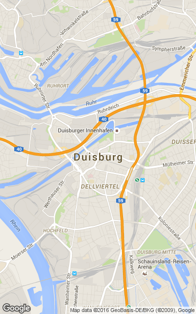
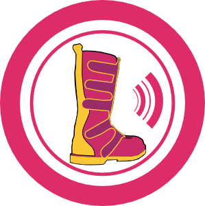

| # | Entfernung | Name | Strasse | PLZ Ort | Gateway | Navigation |
| A | 4 km | FF-DU-Fahrschule-Reddig | Schwarzenberger Straße 92 | 47226 Duisburg | GOTO | |
| B | 5 km | FF-CC-DO7CXC-2 | Ottostraße 62 | 47198 Duisburg | GOTO | |
| C | 5 km | FF-DU-Trinkhalle-Viktoriapark | Kronprinzenstraße 43A | 47229 Duisburg | GOTO | |
| D | 5 km | FF-DU-Capelli | Villenstraße 1 | 47229 Duisburg | GOTO | |
| E | 5 km | FF-CC-DO7CXC-1 | Ottostraße 64 | 47198 Duisburg | GOTO | |
| F | 6 km | FF-MO-Grenzstrasse-01 | Grenzstraße 67 | 47198 Duisburg | GOTO | |
| G | 6 km | FF-MO-Grenzstrasse-03 | Grenzstraße 69 | 47198 Duisburg | GOTO | |
| H | 6 km | FF-DU-Oestrum-02 | Oestrumer Straße 20-21 | 47228 Duisburg | GOTO | |
| I | 6 km | FF-MO-Grenzstrasse-05 | Am Handweiser 7 | 47198 Duisburg | GOTO | |
| J | 6 km | FF-MO-Grenzstrasse-02 | Grenzstraße 67 | 47198 Duisburg | GOTO | |
| K | 7 km | FF-DU-StellwerkHOF-03 | Am Stellwerk 33 | 47229 Duisburg | GOTO | |
| L | 8 km | ff-du-Apple | Braunlager Straße 20 | 47259 Duisburg | GOTO | |
|  | ||||||
|  |
Alle
Angaben ohne Gewähr und Vollständigkeit. funkknecht@gmail.com V0.3
Diese Seite ist nur temprorär gespeichert und wird gelöscht werden !
Infos über Freifunk unter freifunk-rheinland.net
|
|||||